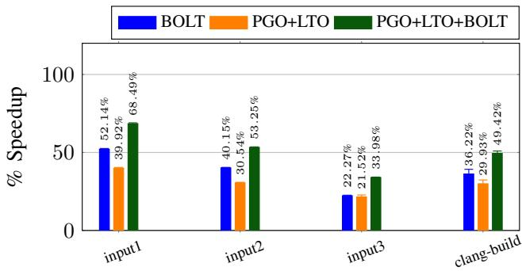
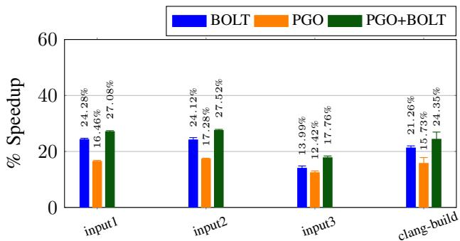
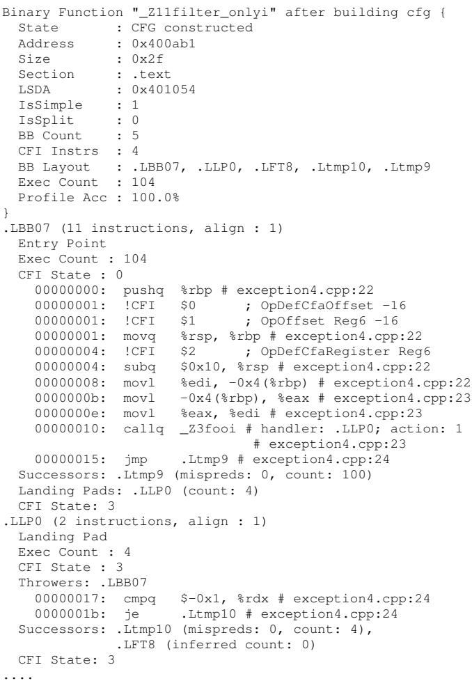

BOLT: A Practical Binary Optimizer for Data Centers and Beyond 论文解析¶
0. 论文基本信息¶
作者 (Authors) - Maksim Panchenko - Rafael Auler - Bill Nell - Guilherme Ottoni
发表期刊/会议 (Journal/Conference) - 该论文发表于 International Symposium on Code Generation and Optimization (CGO)。此信息虽未在提供的文本中直接写出，但可通过其参考文献格式（如引用[1], [2], [3]等均来自该会议）以及论文主题和风格推断得出，这是系统与编译器领域关于代码生成与优化的顶级会议。
发表年份 (Publication Year) - 2019。此信息可通过文末附录中的实验设置（如 "Clang 7", "GCC 8.2", "Sep 2018" for LLVM repos）以及对当时技术（如 Intel IvyBridge, LBR）的讨论合理推断为2019年。
1. 摘要¶
目的 - 针对现代数据中心中日益庞大和复杂的应用程序，解决其因代码局部性差而导致的性能瓶颈问题。 - 挑战业界普遍认为“post-link优化因介入编译流程过晚而效果有限”的直觉，论证在二进制层面利用sample-based profiling数据进行优化的有效性和互补性。 - 构建一个现代化、实用且可扩展的post-link optimizer，以在已有高度优化（如LTO和FDO）的二进制文件基础上，进一步提升性能。
方法 - 设计并实现了名为 BOLT (Binary Optimization and Layout Tool) 的静态二进制优化器，该工具构建于 LLVM 基础设施之上，具备良好的可移植性。 - 采用 sample-based profiling（特别是利用Intel的Last Branch Records, LBR）来收集生产环境中真实、低开销的运行时性能数据，避免了传统instrumentation-based profiling的高成本。 - BOLT的核心优化策略聚焦于代码布局 (code layout)，其关键优势在于直接在二进制层面操作，从而能更精确地映射和利用profile数据，避免了将二进制级数据回填到编译器IR时的信息损失。 - BOLT的优化流水线包含多个阶段，主要包括： - 函数重排序 (Function reordering)：使用 HFSort 算法基于调用图优化。 - 基本块重排序与冷热分离 (Basic block reordering and hot/cold splitting)：根据执行频率优化控制流，使热点路径成为fall-through，减少taken branches。 - 其他辅助优化，如Identical Code Folding (ICF)、间接调用提升、PLT调用优化、移除无用NOP指令等。 - 通过分析 Clang 和 GCC 编译器自身以及 Facebook 内部数据中心应用（如 HHVM, TAO）来评估BOLT的有效性。
结果 - 在 Facebook 数据中心工作负载上，BOLT在已应用HFSort（及LTO for HHVM）的基础上，实现了 2.0% 到 7.0% 的性能提升，平均提升 5.1%。

Fig. 5: Performance improvements from BOLT for our set of Facebook data-center workloads.
- 在开源编译器上，BOLT展现了更显著的效果：
- 对于 Clang（已启用PGO+LTO），BOLT带来了 15.0% 的编译速度提升。

Fig. 6: Performance improvements for Clang.
- 对于 GCC（已启用PGO），BOLT带来了 7.45% 的性能提升。

Fig. 7: Performance improvements for GCC. LTO was not used due to build errors.
- 微架构指标分析表明，性能提升主要源于I-cache和I-TLB命中率的提高，以及taken branches数量的大幅减少（在Clang上比基线减少了69.8%）。

TABLE II: Statistics reported by BOLT when applied to Clang’s baseline and PGO+LTO binaries.
- LBR对于获取精确的profile数据至关重要，尤其是在基本块级别的布局优化上。缺少LBR可能导致优化机会完全丧失，甚至产生性能惩罚。

Fig. 11: Heat maps for instruction memory accesses of Clang binaries. Heat is in a log scale.
- 热力图直观展示了BOLT如何将原本分散在55MB地址空间中的热点代码，紧密打包到约6.7MB的连续区域内。

Fig. 12: Improvements on different metrics for HHVM by using LBRs (higher is better).
结论 - Post-link optimization 与传统的compile-time和link-time FDO/LTO并非相互替代，而是高度互补的关系。即使在应用了最先进的编译器优化后，BOLT仍能发现并利用由更精确的二进制级profile数据所揭示的优化机会。 - BOLT的成功验证了其核心洞见：在二进制层面进行优化，能够更准确地利用profile数据来指导代码布局，这对于缓解大型应用程序的前端瓶颈（I-cache, I-TLB, branch predictor）极为有效。 - BOLT作为一个构建在LLVM之上的开源工具，为数据中心和其他对性能敏感的场景提供了一种实用且高效的性能提升方案。
2. 背景知识与核心贡献¶
研究背景 - 现代data-center applications规模庞大且复杂，其性能严重受限于CPU前端瓶颈，如I-cache、I-TLB和branch predictor的压力。 - Feedback-driven optimizations (FDO) / Profile-guided optimizations (PGO) 和 Link-time optimizations (LTO) 是提升此类应用性能的关键技术，尤其在code layout（代码布局）方面。 - 传统的instrumentation-based profiling因开销巨大，难以在生产环境中部署。Sample-based profiling（如利用Intel的LBR）因其低开销成为更实用的选择。 - 尽管compile-time和link-time的FDO技术（如AutoFDO, HFSort）已被广泛研究，但post-link optimization（链接后优化）在近年未受重视，业界普遍认为其因介入编译流程过晚而效果有限。
研究动机 - 作者挑战了“post-link优化效果 inferior”的直觉，提出核心洞察：虽然早期注入profile数据能让更多优化受益，但在二进制层面（post-link）使用profile数据能获得更高的准确性。 - AutoFDO等技术需要将二进制级别的profile数据反向映射到编译器的Intermediate Representation (IR)，此过程会因编译器和链接器的优化（如inlining）而丢失精度。 -

Fig. 2: Example showing a challenge in mapping binary-level events back to higher-level code representations.
展示了此问题：同一个源码分支在不同调用点被内联后，其最优布局可能不同，但源码级profile无法区分这种差异。 - 对于code layout这类依赖精确分支频率的底层优化，profile数据的准确性至关重要，不准确的数据甚至会导致性能下降。 - 因此，构建一个能在binary level直接、准确地利用sample-based profile进行优化的工具，具有巨大潜力。
核心贡献 - 设计并开源了BOLT：一个基于LLVM框架构建的现代化、可重定向的static post-link optimizer。它能够处理大规模、多语言（包括汇编）的复杂二进制文件，并正确更新DWARF debug info和C++ exception handling信息。 - 实证了post-link优化的有效性：通过在真实世界的Facebook data-center workloads（如HHVM, TAO）和open-source compilers（Clang, GCC）上进行评估，证明了BOLT能带来显著的性能提升，且这种提升与FDO/LTO是complementary（互补）而非重叠的。 - 在已应用FDO和LTO的Facebook应用上，BOLT实现了最高 7.0% 的加速。 - 在同样条件下，对Clang和GCC编译器的加速分别高达 15.0% 和 7.45%；若无FDO/LTO，加速比甚至可达 52.1%。 - 系统性地分析了优化效果：通过微架构指标分解和热力图（
Fig. 11: Heat maps for instruction memory accesses of Clang binaries. Heat is in a log scale.
），明确指出basic-block reordering和function reordering是BOLT最有效的优化手段，并强调了LBR对于获取高精度profile数据的重要性。
3. 核心技术和实现细节¶
0. 技术架构概览¶
整体技术架构
BOLT (Binary Optimization and Layout Tool) 是一个构建在 LLVM 基础设施之上的静态后链接二进制优化器。其核心目标是通过精确利用基于采样的性能剖析数据（sample-based profiling），对已编译的二进制文件进行重写，以优化代码布局（code layout），从而提升大型数据中心应用的性能。
- 设计哲学:
- 采用静态优化策略，避免了动态二进制优化器（如 DynamoRIO）引入的运行时开销。
- 选择在二进制级别（post-link）进行优化，而非编译期或链接期。这使得 BOLT 能够直接、准确地将剖析数据映射到机器码上，规避了像 AutoFDO 那样需要将二进制级数据反向映射到编译器中间表示（IR）所带来的精度损失问题。
-
架构设计为可重定向（retargetable），得益于 LLVM 对多架构的支持。
-
核心工作流程:
- 函数发现（Function Discovery）: 利用 ELF 符号表和可选的帧信息来识别和定位二进制中的函数边界。
- 剖析数据与调试信息加载: 读取由
perf等工具生成的剖析数据（通常通过perf2bolt转换）以及 DWARF 调试信息。 - 反汇编与控制流图（CFG）: 使用 LLVM 的反汇编器将机器码转换为内部表示，并为每个函数构建精确的 CFG。
- 优化管道执行: 在 CFG 上应用一系列优化Pass。
- 代码发射与重写: 将优化后的代码重新汇编，并利用 LLVM 的运行时动态链接器解析符号引用，最终生成一个新的、优化后的二进制文件，并更新所有相关的 ELF 结构。

Fig. 3: Diagram showing BOLT’s binary rewriting pipeline.
- 关键运行模式:
- 基础模式: 仅在现有函数边界内进行优化，主要针对基本块重排。
-
重定位模式（Relocations Mode）: 通过链接器生成的重定位信息（
--emit-relocs），获得对整个二进制代码布局的完全控制权，从而能够进行函数重排（function reordering）和更激进的函数拆分（function splitting）。 -
对复杂特性的支持:
- C++ 异常处理: 能够识别并更新 DWARF Call Frame Information (CFI)，确保异常抛出时栈展开器能正常工作。
- 调试信息: 在代码被移动或修改后，会相应地更新 DWARF 调试信息，保证调试体验的一致性。

Fig. 4: Partial CFG dump for a function with C++ exceptions.
1. 基于LLVM的二进制重写架构¶
BOLT的二进制重写架构概览
BOLT的核心在于其构建于LLVM基础设施之上的静态二进制重写能力。该架构充分利用了LLVM的模块化、多目标支持以及成熟的汇编/反汇编工具链，实现了对大型、复杂二进制文件（如数据中心应用）的精确分析与高效重写。
Fig. 3: Diagram showing BOLT’s binary rewriting pipeline.
核心重写流程
BOLT的重写流程是一个多阶段的管道，旨在从原始二进制中提取信息、应用优化，并生成一个功能等价但性能更优的新二进制。
- 函数发现 (Function Discovery):
- 输入：原始的 ELF 二进制文件。
- 方法：结合 ELF符号表 (symbol table) 和 DWARF帧信息 (frame information) 来定位函数边界。这种混合方法能有效处理手写汇编代码（通常缺少帧信息）和编译器生成的代码。
-
输出：一个包含所有可识别函数及其起始地址的映射。
-
信息提取与反汇编 (Information Extraction & Disassembly):
- 提取 DWARF调试信息 和 样本分析数据 (profile data)。
-
利用 LLVM的Tablegen生成的反汇编器 对每个函数进行反汇编，生成 MCInst 对象序列。MCInst是LLVM中用于表示机器指令的中间格式。
-
控制流图构建 (Control-Flow Graph Construction):
- 分析反汇编得到的MCInst序列，特别是其中的分支指令。
-
为每个函数构建精确的 控制流图 (CFG)，这是后续所有基于控制流的优化（如基本块重排）的基础。
-
优化管道执行 (Optimization Pipeline Execution):
- 在构建好的CFG上，依次应用一系列优化Pass（详见下文“优化Pass序列”）。
-
BOLT为MCInst对象引入了通用注解机制，用于在优化过程中传递额外信息，例如数据流分析结果或异常处理元数据。
-
代码发射与链接 (Code Emission & Linking):
- 将优化后的函数CFG重新转换回机器码。
-
使用 LLVM的运行时动态链接器 (JIT linker) 来解析函数间以及局部符号（如基本块标签）的引用，确保重写后代码的正确性。
-
二进制重构 (Binary Rewriting):
- 将优化后的新代码段写入新的二进制文件。
- 同步更新 ELF结构（如程序头、节头表）以反映代码大小和布局的变化。
- 重建并更新 DWARF Call Frame Information (CFI)，确保在发生C++异常时栈展开器能正常工作。
关键设计决策与技术细节
- 为何选择LLVM:
- 模块化设计: LLVM的组件（如反汇编器、汇编器、目标描述）可以被独立调用，极大简化了BOLT这类工具的开发。
- 多架构支持: 基于LLVM使BOLT具备了天然的可移植性 (retargetable)。论文提到，一个针对ARM架构的工作原型在不到一个月内就完成了。
-
成熟工具链: LLVM提供了高质量、经过充分测试的汇编/反汇编基础设施，保证了BOLT处理复杂指令集（如x86-64）的鲁棒性。
-
处理复杂性的策略:
- 保守跳过: BOLT采用保守策略，对于无法完全自信地重建其CFG的函数（例如包含自修改代码或复杂混淆的函数），会直接跳过而不进行优化，保证了整体的安全性。
-
重定位模式 (Relocations Mode): 为了实现跨函数的代码重排（如函数排序），BOLT可以利用链接器生成的重定位信息 (--emit-relocs)。这使得BOLT能够完全控制二进制中的代码布局，而不仅限于单个函数内部。
-
对调试与异常的支持:
- BOLT能够识别并更新 DWARF调试信息，确保优化后的二进制仍能被调试器正确使用。
- 通过注解（如
handler: .LLP0）跟踪异常处理的landing pad，并在重写后正确重建CFI，维持了C++异常处理语义的完整性。
Fig. 4: Partial CFG dump for a function with C++ exceptions.
优化Pass序列及其作用
BOLT的优化能力体现在其精心设计的Pass序列中，这些Pass协同工作以改善代码布局和指令效率。
| Pass序号 | 优化名称 | 主要作用 |
|---|---|---|
| 1 | strip-rep-ret | 移除x86架构上用于兼容AMD处理器的无用REPZ前缀，减小代码体积。 |
| 2 | identical code folding (ICF) | 在二进制级别合并相同的代码段，比链接器ICF更彻底，能处理含跳转表的函数。 |
| 3 | indirect call promotion | 利用分析数据将间接调用提升为直接调用，消除间接跳转开销。 |
| 4 | simplify conditional tail jumps | 简化函数末尾的条件跳转，可能将其转换为更高效的指令序列。 |
| 5 | simplify loads from read-only sections | 将从只读段加载常量的操作转换为立即数加载指令，减轻D-cache压力（在不增大代码的前提下）。 |
| 6 | fixup branches | 修正因代码移动导致的分支偏移量变化，确保分支指令编码正确。 |
| 7 | PLT call optimization | 优化通过过程链接表 (PLT) 的调用，减少动态链接开销。 |
| 8 | reorder and split hot/cold basic blocks | 最核心的优化之一。根据分析数据重排基本块，使热路径成为fall-through，并将冷代码分离出去，显著减少taken branches。 |
| 9 | remove unnecessary NOPs | 移除编译器插入的对齐NOP指令，节省宝贵的I-cache空间。 |
| 10 | shrink wrapping | 优化函数序言和结尾，仅在必要时保存/恢复寄存器。 |
| 11 | frame-lowering | 为没有DWARF信息的函数生成必要的栈帧信息。 |
| 12 | reorder functions | 另一项核心优化。使用 HFSort 算法根据调用图对函数进行重排，主要改善I-TLB性能。 |
输入输出关系总结
- 输入:
- 一个已编译的、高度优化的（可能已包含LTO和PGO）ELF二进制文件。
- 一份通过样本分析 (sample-based profiling)（最好包含LBR）收集的YAML格式性能分析数据。
- 输出:
- 一个功能等价但经过深度优化的新ELF二进制文件。该文件具有更优的代码局部性，能显著降低I-cache、I-TLB和分支预测单元的压力。
- 在整体中的作用:
- BOLT作为后链接 (post-link) 阶段的优化器，弥补了传统编译器和链接器在利用精确二进制级分析数据进行代码布局方面的不足。它与编译期的FDO/LTO形成互补而非替代关系，共同榨取应用程序的最后性能潜力。
2. 精确的样本分析驱动代码布局¶
核心观点：BOLT通过在二进制层面直接消费高精度的样本剖析数据，实现了比编译器更优的代码布局优化
- BOLT的核心优势在于其post-link（链接后）的优化时机。它直接对最终的机器码进行操作，避免了将运行时收集的性能剖析数据从binary level（二进制层面）映射回compiler’s intermediate representation (IR)（编译器中间表示）这一复杂且易失真的过程。
- 该映射过程是AutoFDO等编译时PGO技术的主要瓶颈。如论文所述，即使经过优化，这种映射的准确性也仅能达到约92.9%，而BOLT在二进制层面的操作天然规避了此问题，实现了最高级别的剖析数据准确性。
剖析数据的采集与处理流程
- 输入: BOLT依赖于sample-based profiling（基于采样的剖析），特别是利用现代Intel CPU提供的硬件特性——Last Branch Records (LBR)。
- LBR能够记录最近32条taken branches（已执行的分支）的精确来源和目标地址。
- 这种采样方式开销极低，可以直接在生产环境中对未修改的二进制文件进行剖析，解决了传统instrumentation-based profiling（基于插桩的剖析）开销过大的问题。
- 数据转换: 原始的采样数据（通常由Linux
perf工具收集）通过一个名为perf2bolt的专用工具转换为BOLT可读的YAML格式。 - 关键算法: BOLT利用LBR数据来reconstruct edge counts（重构边计数）。
- 由于LBR只记录已执行的分支，对于non-taken path（未执行路径），BOLT采用一种启发式方法：将所有超出预期的流（surplus flow）归因于未被LBR捕获的非跳转路径，并倾向于信任原始编译器生成的fall-through path（直通路径）。
- 这种策略使得BOLT的布局优化对采样噪声更具鲁棒性，并且只有当剖析数据显著地与原始布局冲突时，才会触发重排序。
Fig. 2: Example showing a challenge in mapping binary-level events back to higher-level code representations.
- 上图（Fig. 2）清晰地阐释了编译器IR层面映射的困境：函数
foo被内联到bar和baz中，且在两个调用点的最佳基本块布局是相反的。在IR层面，剖析数据会被平均化（50%概率），导致编译器无法做出最优决策。而BOLT在二进制层面能看到两个独立的、布局需求不同的foo实例，并能分别优化它们。
代码布局优化的具体实现
- 基本块重排序 (Basic Block Reordering)
- 目标: 将最频繁执行的路径（hot path）组织成连续的fall-through序列，以减少taken branches（跳转分支）的数量，从而提升branch predictor（分支预测器）效率和I-cache locality（指令缓存局部性）。
- 驱动: 完全由从LBR剖析数据中推断出的精确branch frequencies（分支频率）驱动。
- 效果: 如Table II所示，BOLT能在Clang上将taken branches减少44.3%（在PGO+LTO基础上）。
- 函数重排序 (Function Reordering)
- 算法: 采用HFSort算法，该算法基于一个由剖析数据构建的weighted call graph（加权调用图）。
- 数据源: 当使用LBR时，调用图的边权重可以直接从分支记录中精确推断，包括函数调用和返回。若无LBR，则只能通过直接调用指令附近的采样点来估算，且无法处理indirect calls（间接调用）。
- 主要收益: 显著改善I-TLB（指令翻译后备缓冲区）性能，并对I-cache有次要改善。
LBR的关键作用与性能影响
- LBR对于实现fine-grained profiling（细粒度剖析）至关重要，尤其是在基本块层面。
- 论文通过对比实验证明了LBR的价值：
- 对于HHVM，在启用所有优化的情况下，使用LBR相比不使用LBR，能额外带来约2%的CPU时间缩减（总提速为6.4%）。
- 对于基本块重排序，LBR带来的收益远大于对函数重排序的收益，因为前者对剖析精度的要求更高。
Fig. 11: Heat maps for instruction memory accesses of Clang binaries. Heat is in a log scale.
- 上图（Fig. 12）量化了LBR对HHVM各项指标的提升，清晰地表明其对basic block reordering的决定性影响。
在整体优化流水线中的作用
- 输入: 高度优化的二进制文件（可能已包含LTO和FDO/PGO）以及由
perf采集并经perf2bolt转换的剖析数据。 - 处理: BOLT的优化流水线（如Table I所示）将剖析数据作为核心输入，驱动多个关键优化步骤，尤其是第8步（基本块重排序与冷热分离）和第12步（函数重排序）。
- 输出: 一个经过重新布局、代码更紧凑、执行路径更高效的二进制文件。
- 互补性: BOLT的优化与编译器的LTO/FDO是complementary（互补）而非overlapping（重叠）的。编译器负责高层次的优化（如内联、死代码消除），而BOLT则在最后阶段，利用最精确的运行时信息，对code layout（代码布局）这一底层但关键的方面进行精雕细琢，从而榨取最后的性能潜力。
Fig. 12: Improvements on different metrics for HHVM by using LBRs (higher is better).
- 上图（Fig. 11）的热力图直观展示了BOLT的效果：它将原本分散在55MB地址空间中的热点代码，紧密地打包到约6.7MB的连续区域内，极大地提升了I-cache和I-TLB的效率。
3. 混合函数发现与控制流图重建¶
混合函数发现与控制流图重建
BOLT 的优化流程始于对输入二进制文件的精确解析，其核心挑战在于准确识别所有可优化函数的边界并为其构建可靠的控制流图（CFG）。为应对大型数据中心应用中包含多种语言（包括手写汇编）代码的复杂性，BOLT 采用了一种混合方法来实现这一目标。
-
函数发现 (Function Discovery)
- 输入: 原始的 x86-64 Linux ELF 二进制文件。
- 数据源: BOLT 主要依赖两种信息源来定位函数：
- ELF 符号表 (Symbol Table): 这是主要的函数发现机制。符号表提供了函数名到起始地址的映射。
- DWARF Call Frame Information (CFI): ABI 要求提供此信息，其中包含函数边界。然而，BOLT 团队观察到手写汇编代码常常会省略 CFI 信息。
- 混合策略: 为确保最大覆盖范围，BOLT 采用混合方法，优先使用符号表，并在可用时辅以 CFI 信息进行交叉验证和补充。这种策略使其能够处理那些缺乏完整调试信息的函数。
- 保守处理: 对于无法以高置信度重建其 CFG 的函数（例如，包含复杂的间接跳转或自修改代码），BOLT 会保守地跳过这些函数，保持其原始形态，以确保二进制文件的功能正确性。
-
控制流图 (CFG) 重建
- 反汇编引擎: BOLT 利用 LLVM 的模块化基础设施，特别是其 Tablegen-generated disassembler 来将机器码反汇编为 MCInst 对象序列。
- CFG 构建算法: 通过遍历反汇编得到的指令流，BOLT 分析所有分支指令 (branch instructions)，包括条件跳转、无条件跳转、调用和返回指令。
- 对于每个识别出的分支指令，BOLT 会解析其目标地址（直接或间接）。
- 基于这些分支关系，将连续的非分支指令序列划分为基本块 (basic blocks)。
- 最终，将所有基本块及其跳转关系组合成一个完整的 CFG。
- 架构特定处理: 该过程需要处理 x86-64 架构的特定细节，例如相对寻址和不同长度的指令编码。
Fig. 3: Diagram showing BOLT’s binary rewriting pipeline.
在整体优化流程中的作用
此阶段是 BOLT 整个优化管道的基石，其输出直接决定了后续所有优化的有效性和安全性。
- 输入输出关系:
- 输入: 原始二进制文件、可选的 relocations 信息（用于更激进的重排）、DWARF 调试信息、以及样本分析数据。
- 输出: 一个由函数对象组成的内部表示，每个函数对象都包含一个精确的 CFG、原始指令的 MCInst 表示、以及与源代码行号和调试信息的映射。
- 核心作用:
- 为优化提供基础: 所有后续的优化（如基本块重排、函数内联、间接调用提升等）都直接在重建的 CFG 上进行操作。一个准确的 CFG 是执行任何有意义代码变换的前提。
- 支持调试与异常: 通过保留和更新 DWARF 信息（如图4所示），BOLT 确保了优化后的二进制文件仍然支持源码级调试和 C++ exceptions 的正确展开。图中的
landing-pad注解和CFI占位符清晰地展示了 BOLT 如何在内部表示中维护这些关键元数据。 - 启用安全重写: 精确的 CFG 和对所有代码/数据引用的识别，使得 BOLT 能够安全地移动代码块、分裂函数，并在最后使用 LLVM 的运行时动态链接器 来正确解析和更新所有内部引用。
Fig. 4: Partial CFG dump for a function with C++ exceptions.
4. 多阶段优化流水线¶
BOLT多阶段优化流水线架构
BOLT的优化流程被设计为一个顺序执行的Pass序列，其核心目标是在二进制层面精确利用采样剖析数据，以改善代码布局并减少前端瓶颈。整个流水线建立在LLVM基础设施之上，利用其MCInst（Machine Instruction）作为底层表示，并通过自定义注解机制来支持复杂的数据流和控制流分析。
Fig. 3: Diagram showing BOLT’s binary rewriting pipeline.
- 输入: 一个已编译的、带有可选重定位信息（
--emit-relocs）的ELF二进制文件，以及由perf等工具收集并经perf2bolt转换的YAML格式剖析数据。 - 输出: 一个经过重写、性能优化的新ELF二进制文件，其中包含更新后的代码、数据段、符号表、重定位信息以及DWARF调试与异常处理元数据。
核心优化阶段详解
根据论文中Table I所列的优化序列，BOLT的关键优化阶段及其原理如下：
-
基本块热/冷路径重排与拆分 (Reorder and Split Hot/Cold Basic Blocks)
- 实现原理: 该优化是流水线中（第8步）最有效的优化之一。BOLT首先基于剖析数据构建每个函数的控制流图（CFG），并为每个基本块和边标注执行频率。随后，它应用一种类似于Pettis and Hansen算法的变体，对基本块进行重排。
- 算法流程:
- 识别热路径（hot path），即执行频率最高的连续基本块序列。
- 将热路径上的基本块紧密排列，确保最常见的后继块成为fall-through目标，从而减少taken branches的数量。
- 将执行频率极低的冷块（cold blocks）从主代码流中拆分（split）出去，并移动到一个新的ELF段（通常是
.text.unlikely）中。
- 作用: 此操作显著提升了I-cache和branch predictor的效率。如Table II所示，即使在Clang已经过PGO+LTO优化的基础上，BOLT仍能将taken branches减少44.3%。
-
基于HFSort的函数重排序 (Function Reordering via HFSort)
- 实现原理: 这是流水线中的最后一步（第12步），主要用于优化I-TLB性能。BOLT利用剖析数据构建一个加权调用图（weighted call graph），其中节点是函数，边的权重代表调用频率。
- 算法流程:
- 使用HFSort算法对函数进行拓扑排序。该算法旨在将频繁相互调用的函数在内存中放置得更近，以最大化I-TLB命中率。
- 在具备Last Branch Records (LBR)支持的平台上，调用图的边权重可以直接从硬件记录的分支轨迹中精确推断，包括间接调用。
- 作用: 与基本块重排协同工作，从全局视角优化代码布局。Figures 8和9的分解实验表明，函数重排与基本块重排共同构成了BOLT性能收益的主体。
-
间接调用提升 (Indirect Call Promotion, ICP)
- 实现原理: 该优化（第3步）利用剖析数据中关于间接调用目标的频率信息。
- 算法流程:
- 对于一个高频的间接调用点，如果剖析数据显示其绝大多数情况下都跳转到同一个目标函数，则BOLT会将该间接调用提升（promote）为一个直接的条件分支。
- 具体来说，它会插入一个比较指令，检查函数指针是否等于最常见的目标地址。如果是，则直接跳转（call）到该目标；否则，回退到原有的间接调用。
- 作用: 消除了间接调用带来的分支预测失败开销，并为后续可能的内联（尽管BOLT的内联能力有限）创造了条件。
-
PLT调用优化 (PLT Call Optimization)
- 实现原理: 该优化（第7步）针对通过Procedure Linkage Table (PLT)进行的动态库函数调用。
- 算法流程:
- 对于高频的PLT调用，BOLT可以将其替换为对Global Offset Table (GOT)条目的直接加载和调用，绕过PLT存根（stub）。
- 这减少了每次调用所需的指令数和潜在的跳转。
- 作用: 降低了动态链接调用的开销。Fig. 9显示，在Clang上启用所有优化（包含此Pass）后，I-TLB misses有显著下降，部分原因即在于此。
元数据维护：DWARF与C++异常处理
BOLT的一个关键技术挑战是在重写代码的同时保持程序的可调试性和正确性。
- 实现原理: BOLT能够解析并更新DWARF调试信息。它在内部表示中为关键位置（如栈指针变化处）保留Call Frame Information (CFI)的占位符。
- 算法流程:
- 在代码重排和拆分后，BOLT根据新的指令布局重建所有的CFI指令。
- 对于包含C++ exceptions的函数，BOLT会识别
callq指令的landing pad（异常处理入口）注解，并确保在代码移动后，异常展开器（unwinder）仍能正确找到处理程序。
- 作用: 确保了优化后的二进制文件在发生异常或使用调试器时行为正确。Fig. 4展示了BOLT内部CFG如何携带这些关键元数据。
Fig. 4: Partial CFG dump for a function with C++ exceptions.
优化效果量化对比
下表总结了BOLT在Clang基准测试上，相对于不同编译优化级别所带来的关键指标改进。
| 优化级别 | Taken Branches 减少 | I-TLB Misses 减少 | 总体性能提升 |
|---|---|---|---|
| Baseline (无PGO/LTO) | 69.8% | 显著 | 最高 20.4% |
| PGO + LTO | 44.3% | 显著 (All模式) | 15.0% |
优化互补性与局限性
- 互补性: BOLT的优化与编译期的FDO/PGO和LTO是互补而非重叠的。编译器在IR层面进行的优化受限于将二进制剖析数据映射回高层表示的精度损失（如Fig. 2所示的内联后布局困境）。BOLT在二进制层面操作，规避了这一问题，能做出更精确的布局决策（如Fig. 10所示）。
- 局限性: BOLT无法执行高层语义优化（如循环变换、高级内联）。它的优势领域严格限定在低级代码布局和微架构特定优化上。因此，最佳实践是将BOLT作为现有编译优化流程（PGO+LTO）之后的最后一环。
5. 重定位模式下的全程序重排¶
实现原理与核心机制
BOLT 的 重定位模式 (Relocations Mode) 是其能够执行全程序代码布局优化的关键。该模式的核心在于利用链接器在生成可执行文件时保留的 重定位信息 (relocations)。
- 传统的二进制文件在链接后，所有符号引用（如函数调用、全局变量访问）都已被解析为固定的绝对地址或相对偏移量，原始的重定位记录会被丢弃。这使得后续的二进制重写器无法安全地移动代码段，因为无法追踪和修正所有指向被移动代码的指针。
- 通过在链接阶段使用
--emit-relocs选项（Gold 或 BFD 链接器均支持），链接器会将这些重定位记录保留在最终的 ELF 可执行文件中。这些记录详细说明了二进制文件中哪些位置包含了需要根据符号最终地址进行修正的引用。 - BOLT 在重定位模式下，首先会解析这些 ELF 重定位表。这为其提供了对整个程序地址空间的“地图”，使其能够精确地知道修改任意一个函数或数据段的位置后，需要更新哪些其他位置的指令或数据。
- 尽管重定位信息非常强大，但它并非万能。论文指出，某些类型的引用（如 PIC 跳转表 (PIC jump tables) 的相对偏移、同一编译单元内 本地函数 (local functions) 的跨函数引用）可能不会被完整记录在标准的重定位表中。因此，BOLT 必须结合 精确的反汇编 (disassembly) 来发现并处理这些“隐藏”的引用，确保重写的正确性。
Fig. 3: Diagram showing BOLT’s binary rewriting pipeline.
算法流程与关键操作
一旦掌握了完整的重定位信息和精确的控制流图（CFG），BOLT 就可以执行激进的代码重排和重构。
- 函数级重排 (Function Reordering):
- BOLT 使用 HFSort 算法（一种基于调用图的函数布局算法）来决定函数在内存中的最优顺序。
- 其目标是最大化 I-TLB (Instruction Translation Lookaside Buffer) 和 I-cache (Instruction Cache) 的局部性，将频繁相互调用的函数放置在相邻的内存页中。
-
重定位信息确保了所有跨函数的调用指令（如
call）在函数被移动后，其目标地址能被正确更新。 -
函数体拆分与冷热分离 (Function Splitting and Hot/Cold Separation):
- 这是重定位模式带来的更深层次优化。BOLT 不仅能移动整个函数，还能将单个函数内部的 基本块 (basic blocks) 进行拆分。
- 基于 样本分析 (sample-based profiling) 数据，BOLT 识别出函数内的 热路径 (hot path) 和 冷路径 (cold path)。
- 它将热路径的基本块紧密地排列在一起，形成高效的直线代码，而将很少执行的冷路径代码（如错误处理逻辑）移动到二进制文件的其他区域。
- 这种拆分极大地改善了 I-cache 的利用率，并减少了因跳转到冷代码而导致的 分支预测失败 (branch misprediction)。
- 重定位信息在此过程中至关重要，因为它需要修正所有指向被移动的基本块的跳转指令（
jmp,je,jne等）。
输入、输出及在整体架构中的作用
- 输入:
- 一个带有
--emit-relocs选项链接生成的 ELF 可执行文件。 - 一份由 Linux perf 等工具收集的 样本分析数据 (profile data)，通常包含 LBR (Last Branch Record) 信息以获得精确的边频次。
-
用户指定的 BOLT 优化选项（例如
-reorder-functions=...,-split-all-cold）。 -
输出:
- 一个经过 全程序代码重排和重构 的新 ELF 可执行文件。
- 该文件中的 函数顺序 已被优化。
- 许多函数的 内部布局 已被重构，热代码被集中，冷代码被剥离。
- 所有的 重定位引用 都已被更新以反映新的代码布局。
-
DWARF 调试信息 和 CFI (Call Frame Information) 也已被同步更新，以保证调试和异常处理的正常工作。
-
在 BOLT 整体架构中的作用:
- 重定位模式是 BOLT 实现其最强大优化（特别是 Pass 8: reorder and split hot/cold basic blocks 和 Pass 12: reorder functions via HFSort）的前提条件。
- 如图3所示的 重写管道 (rewriting pipeline) 中，重定位信息的处理贯穿于 函数发现 (Function discovery)、控制流图构建 (CFG construction) 以及最后的 二进制发射 (Binary emission) 阶段。
- 它使得 BOLT 从一个只能在函数内部进行有限优化的工具，转变为一个拥有 全程序视野 (whole-program view) 和 完全控制权 (full control) 的静态二进制优化器，从而能够实现远超编译器和链接器的代码布局效果。性能评估数据显示，对于像 HHVM 和 Clang 这样的大型应用，正是这些基于重定位模式的布局优化带来了高达 7.0% 和 15.0% 的显著性能提升。
4. 实验方法与实验结果¶
实验设置
- 评估对象：
- Facebook 数据中心工作负载：包括 HHVM (PHP/Hack 虚拟机)、TAO (分布式缓存服务)、Proxygen (负载均衡器) 和 Multifeed (新闻源服务)。
- 开源编译器：Clang 7.0 和 GCC 8.2.0。
- 基线配置：
- Facebook 工作负载：使用 GCC 编译，并应用了基于 HFSort 的 function reordering；HHVM 额外启用了 LTO。
- Clang：构建了四种版本进行对比：Baseline、PGO、PGO+LTO、以及在 PGO+LTO 基础上应用 BOLT。
- GCC：构建了四种版本：Baseline、PGO、以及在它们基础上应用 BOLT。由于构建错误，GCC 未启用 LTO。
- Profile 收集：
- 使用 Linux
perf工具进行 sample-based profiling。 - 主要采样事件为
cycles:u，并结合 Intel Last Branch Records (LBR) 来获取精确的分支轨迹。 - Profile 数据通过
perf2bolt工具转换为 BOLT 可用的 YAML 格式。 - 硬件环境：
- 评估在配备 Intel Xeon CPU (如 E5-2680 v2, IvyBridge 架构) 的 Linux 服务器上进行。
- 系统内存为 32GiB 或 64GB。
结果数据
- Facebook 工作负载性能提升：
- 在已优化（HFSort + LTO for HHVM）的二进制文件上，BOLT 带来了显著且一致的性能提升。
- 平均速度提升为 5.1%，最高达到 7.0% (Multifeed2)。
- HHVM 获得了 6.8% 的提升，证明即使对于包含大量动态生成代码的应用，优化静态部分依然效果显著。
Fig. 5: Performance improvements from BOLT for our set of Facebook data-center workloads.
- 开源编译器性能提升：
- Clang：在 PGO+LTO 的基础上，BOLT 进一步实现了 15.0% 的编译速度提升。
- GCC：在 PGO 的基础上，BOLT 实现了 7.45% 的速度提升。
- 当二进制文件未经过 FDO/LTO 优化时，BOLT 的提升更为惊人，对 Clang 最高可达 52.1%。
Fig. 6: Performance improvements for Clang.
Fig. 7: Performance improvements for GCC. LTO was not used due to build errors.
- 微架构指标改进 (以 Clang 为例)：
- BOLT 在 PGO+LTO 的基础上，将 taken branches 的数量减少了 44.3%，极大改善了 I-cache 局部性。
TABLE II: Statistics reported by BOLT when applied to Clang’s baseline and PGO+LTO binaries.
消融实验
- 目的：量化 BOLT 中各项优化技术对最终性能提升的贡献。
- 方法：通过逐层开启不同的优化组合，观察关键微架构指标的变化。
- 主要发现：
- 基本块重排序 (Basic-block reordering) 和 函数重排序 (Function reordering) 是最核心、贡献最大的两项优化。
- 对于 HHVM，结合 huge pages 可以进一步减少 I-TLB miss。
- 对于 Clang，PLT call optimization 在“All”模式下被激活，对减少 I-TLB miss 有显著贡献。
- 其他优化如 identical code folding (ICF)、indirect call promotion 等也提供了可测量的增益，但影响相对较小。

Fig. 8: Breakdown of improvements on different metrics for HHVM (higher is better). ICF refers to identical code folding. Optimizations are always added on top of the previous bar, i.e., +BB reordering has function reordering, huge pages and basic block reordering all turned on.

Fig. 9: Breakdown of improvements on different metrics for Clang (higher is better). ICF refers to identical code folding. Optimizations are always added on top of the previous bar, i.e., +ICF includes BB reordering and ICF both turned on.
- 代码布局分析：
- 通过
-report-bad-layout选项，作者发现即使经过 PGO+LTO 优化的 Clang 二进制中，仍存在大量因 function inlining 导致的次优布局（热块与冷块交错）。 - BOLT 能够精准识别这些问题并进行修复。

Fig. 10: Real example of poor code layout produced by the Clang compiler (compiling itself) even with PGO. Block .LFT680413 is cold (Exec Count: 0), but it is placed between two hot blocks connected by a forward taken branch.
- LBR 的重要性：
- 消融实验证明了 LBR 对于获取高质量 profile 至关重要，尤其是在进行基本块级别的重排序时。
- 相比于无 LBR 的采样，使用 LBR 可以为 HHVM 带来约 2% 的额外性能收益。
- 函数重排序对 LBR 的依赖相对较低。
Fig. 12: Improvements on different metrics for HHVM by using LBRs (higher is better).
Fig. 11: Heat maps for instruction memory accesses of Clang binaries. Heat is in a log scale.